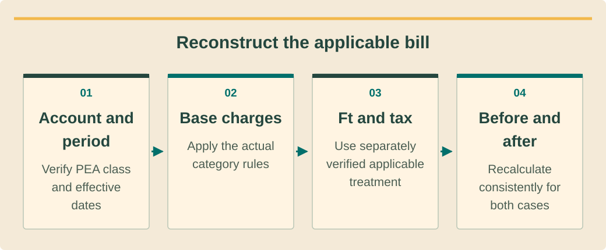

Finance and investment analysisכספים וניתוח השקעותการเงินและวิเคราะห์การลงทุน · 3 / 9
PEA tariffs: class, period and bill reconstructionתעריפי PEA: סיווג תקופה ושחזור חשבוןอัตราPEA: ประเภท ช่วงเวลา และสร้างบิลซ้ำ
Reconstruct an applicable bill before projecting savings.לשחזר חשבון חל לפני חיזוי חיסכון.สร้างบิลที่ใช้จริงซ้ำก่อนคาดประหยัด
What you will be able to doמה תדעו לעשותสิ่งที่คุณจะทำได้
- Apply the dated customer-specific schedule.להחיל לוח מתוארך לפי לקוח.ใช้ตารางตามวันที่และลูกค้า
- Reconcile tiered charges and Ft.ליישב מדרגות ו־Ft.กระทบค่าขั้นบันไดและFt
- Verify TOU and demand rules before modeling.לאמת TOU והספק לפני מודל.ตรวจTOUและค่าความต้องการก่อนจำลอง
Freeze the source and applicabilityקיבוע מקור ותחולהกำหนดแหล่งและการใช้
The PEA tariff schedule effective for September 2026 billing changes residential base charges. Record the exact customer class, voltage, billing period and document version. Do not reuse a 2023 template uncritically or classify a hospitality property solely from its marketing name.לוח PEA החל בחשבונות ספטמבר2026 משנה בסיס ביתי. תעדו סוג, מתח, תקופה וגרסה. אין להשתמש בתבנית2023 בלי בדיקה או לסווג אירוח לפי שם שיווקי בלבד.ตารางPEAใช้บิลกันยายน2026เปลี่ยนค่าฐานบ้าน ระบุประเภท แรงดัน รอบบิล และรุ่นเอกสาร อย่าใช้แม่แบบ2023โดยไม่ตรวจ หรือจัดประเภทที่พักจากชื่อโฆษณา
Build a source tab with links, access date and applicability notes. Match one actual bill before using the model prospectively. Differences may arise from dates, meter multipliers, special rules or omitted items; investigate rather than forcing a balancing adjustment without explanation.בנו לשונית מקור עם קישורים, גישה והערות תחולה. התאימו לחשבון אמיתי לפני תחזית. הפרשים עשויים לנבוע מתאריכים, מקדמי מונה, כללים או רכיבים חסרים; חקרו במקום להכניס התאמת איזון מוסתרת.ทำแท็บแหล่งพร้อมลิงก์ วันเข้าถึง และขอบเขต ตรวจให้ตรงบิลจริงหนึ่งใบก่อนพยากรณ์ ส่วนต่างอาจจากวัน ตัวคูณ กติกาพิเศษ หรือรายการขาด ให้สืบเหตุไม่ใส่ยอดอุดช่องว่างโดยไม่อธิบาย
Residential example with explicit limitsדוגמה ביתית עם גבולות מפורשיםตัวอย่างบ้านพร้อมขอบเขตชัด
For residential class 1.1.2 in that schedule, the first 200 kWh use base rateTHB 3.0000, the next 200 use 4.1584 and consumption above 400 uses 4.3583; monthly service is 24.62. These values are not a universal tariff for businesses.בסוג ביתי1.1.2 באותו לוח:200 קוט״ש ראשונים במחיר בסיס3.0000 באט,200 הבאים4.1584 ומעל400 במחיר4.3583; שירות חודשי24.62. אלה אינם תעריף אוניברסלי לעסקים.บ้านประเภท1.1.2ในตารางนี้200หน่วยแรกค่าฐาน3.0000บาท 200ถัดไป4.1584 เกิน400เป็น4.3583 ค่าบริการ24.62ต่อเดือน ไม่ใช่อัตราสากลของธุรกิจ
PEA’s Ft for September–December 2026 is 0.1623 THB/kWh. Add it to billed energy according to the applicable notice. The worked example excludes VAT and any other account-specific adjustment; it therefore teaches a subtotal, not the final amount payable.Ft של PEA לספטמבר–דצמבר2026 הוא0.1623 באט לקוט״ש. מוסיפים לפי ההודעה החלה. הדוגמה אינה כוללת מע״מ או התאמה פרטנית ולכן מלמדת סכום ביניים ולא לתשלום סופי.FtPEAก.ย.–ธ.ค.2026คือ0.1623บาท/kWh เพิ่มตามประกาศที่ใช้ ตัวอย่างไม่รวมVATและปรับเฉพาะบัญชี จึงสอนยอดย่อย ไม่ใช่ยอดชำระสุดท้าย
See the ideaרואים את הרעיוןมองเห็นแนวคิด
Reconstruct the applicable billמשחזרים את החשבון הרלוונטיสร้างบิลที่ใช้จริงขึ้นใหม่

Read the diagram as textקריאת התרשים כטקסטอ่านแผนภาพเป็นข้อความ
- Account and periodחשבון ותקופהบัญชีและงวด — Verify PEA class and effective datesמאמתים סיווג PEA ותאריכי תחולהยืนยันประเภทผู้ใช้ PEA และวันมีผล
- Base chargesחיובי בסיסค่าไฟฐาน — Apply the actual category rulesמיישמים כללי קטגוריה בפועלใช้กติกาของประเภทจริง
- Ft and taxFt ומסFt และภาษี — Use separately verified applicable treatmentמשתמשים בטיפול רלוונטי שאומת בנפרדใช้วิธีที่เกี่ยวข้องและตรวจแยกแล้ว
- Before and afterלפני ואחריก่อนและหลัง — Recalculate consistently for both casesמחשבים מחדש בעקביות לשני המצביםคำนวณใหม่ด้วยหลักเดียวกันทั้งสองกรณี
TOU and demand are different mechanismsTOU והספק הם מנגנונים שוניםTOUกับค่าความต้องการต่างกลไก
TOU prices energy according to the applicable time schedule; demand charges relate to a defined billing demand measure where the class includes them. Do not create a demand saving merely because annual kWh falls. The relevant peak may occur after sunset.TOU מתמחר אנרגיה לפי לוח זמן; חיוב הספק לפי מדד ביקוש מוגדר כאשר הסיווג כולל אותו. אין ליצור חיסכון הספק רק מפני שקוט״ש שנתי ירד. השיא עשוי להיות לאחר שקיעה.TOUคิดพลังงานตามตารางเวลา ค่าความต้องการใช้ค่ากำลังตามนิยามในประเภทนั้น อย่าสร้างประหยัดค่าความต้องการเพราะkWhปีลด จุดสูงอาจหลังพระอาทิตย์ตก
Before applying either mechanism, verify class eligibility, meter arrangement, time periods, holiday calendar, minimum charges and any relevant lookback rules. Use the official schedule and actual account. A software dropdown or default calendar is not evidence that the property uses that tariff.לפני שימוש אמתו זכאות סוג, מדידה, שעות, חגים, מינימום וכללי עבר רלוונטיים. השתמשו בלוח רשמי ובחשבון. רשימת תוכנה או לוח ברירת מחדל אינם ראיה לתעריף נכס.ก่อนใช้ต้องตรวจประเภท มิเตอร์ ช่วงเวลา ปฏิทินวันหยุด ค่าขั้นต่ำ และกติกาย้อนหลังที่เกี่ยวข้อง ใช้ตารางทางการกับบัญชีจริง รายการในซอฟต์แวร์หรือปฏิทินตั้งต้นไม่ใช่หลักฐานอัตราของสถานที่
Refresh without rewriting historyעדכון בלי שכתוב היסטוריהอัปเดตโดยไม่เขียนอดีตใหม่
Keep historical bills priced under their actual effective periods. Forecasts need an explicit future tariff scenario rather than carrying the current Ft forever as an official fact. Show sensitivity to tariff changes and preserve the model version used for the investment decision.חשבונות עבר מתומחרים לפי תקופותיהם. תחזית דורשת תרחיש תעריף עתידי ולא נשיאת Ft לנצח כעובדה רשמית. הציגו רגישות ושמרו גרסת החלטת השקעה.บิลอดีตใช้ช่วงอัตราจริง คาดการณ์ต้องมีสมมติฐานอนาคต ไม่ลากFtปัจจุบันไปตลอดเหมือนข้อเท็จจริงทางการ แสดงความไวต่ออัตราและเก็บรุ่นที่ใช้ตัดสินลงทุน
Explain why average bill divided by kWh is a diagnostic, not always the avoided marginal rate. Fixed charges and tiers distort it. Recalculate both bills with the same applicable rules to establish the change caused by the proposed system. If the proposed project changes customer classification, document the verified transition separately and compare both complete billing structures before attributing the difference to solar alone.הסבירו שממוצע חשבון חלקי קוט״ש הוא אבחון ולא תמיד מחיר שולי שנמנע. קבועים ומדרגות משנים אותו. חשבו שני חשבונות באותם כללים כדי לזהות שינוי מהמערכת. אם הפרויקט משנה סיווג לקוח, תעדו מעבר מאומת בנפרד והשוו שני מבני חיוב מלאים לפני ייחוס כל ההפרש לסולאר.ยอดบิลหารkWhใช้ตรวจคร่าวๆ ไม่ใช่อัตราส่วนเพิ่มที่หลีกเลี่ยงเสมอ ค่าคงที่กับขั้นบันไดทำให้ต่าง คำนวณทั้งสองบิลด้วยกติกาเดียวเพื่อหาผลจากระบบ หากโครงการเปลี่ยนประเภทผู้ใช้ ให้บันทึกการเปลี่ยนที่ยืนยันแยก และเทียบโครงสร้างบิลทั้งสองครบก่อนยกส่วนต่างทั้งหมดให้โซลาร์
Worked exampleדוגמה פתורהตัวอย่างพร้อมวิธีทำ
300 kWh under class 1.1.2300 קוט״ש בסוג1.1.2300 kWhประเภท1.1.2
Dated teaching case: residential class 1.1.2, September 2026,300 kWh; VAT and other adjustments excluded.מקרה מתוארך: ביתי1.1.2, ספטמבר2026,300 קוט״ש; ללא מע״מ והתאמות נוספות.ตัวอย่างระบุวัน บ้าน1.1.2กันยายน2026ใช้300 kWh ไม่รวมVATและปรับอื่น
- Base energy=200×3+100×4.1584=THB 1,015.84.אנרגיית בסיס=200×3+100×4.1584=1,015.84 באט.ค่าพลังงานฐาน200×3+100×4.1584=1,015.84บาท
- Add service 24.62 and Ft 300×0.1623=48.69.מוסיפים שירות24.62 ו־Ft של48.69.เพิ่มบริการ24.62และFt300×0.1623=48.69
- Subtotal=1,015.84+24.62+48.69=THB 1,089.15.סכום ביניים=1,015.84+24.62+48.69=1,089.15.ยอดย่อย1,015.84+24.62+48.69=1,089.15บาท
THB 1,089.15 is a class- and period-specific pre-VAT subtotal. It must not be published as every 300 kWh customer’s final bill or as a future guaranteed rate.1,089.15 הוא סכום ביניים לפני מע״מ לסוג ולתקופה. אין לפרסם כחשבון סופי לכל לקוח300 קוט״ש או כתעריף עתידי מובטח.1,089.15คือยอดก่อนVATเฉพาะประเภทและช่วง ห้ามเผยเป็นบิลสุดท้ายของทุกคนใช้300 kWhหรืออัตรารับประกันอนาคต
Your turnעכשיו מתרגליםถึงเวลาฝึกฝน
500 to 300 kWhמ־500 ל־300 קוט״שจาก500เหลือ300 kWh
Using exactly the same class and September 2026 assumptions, calculate the pre-VAT subtotal at 500 kWh and the reduction to 300. Service remains unchanged.באותו סוג והנחות ספטמבר2026 חשבו סכום ביניים ל־500 והפחתה ל־300. שירות נותר קבוע.ใช้อัตราประเภทและช่วงเดียวกัน คำนวณยอดก่อนVATที่500และส่วนต่างเหลือ300 ค่าบริการเดิม
- Two reconstructed subtotals.שני סכומי ביניים משוחזרים.ยอดย่อยคำนวณซ้ำสองกรณี
- A marginal-versus-average explanation.הסבר שולי מול ממוצע.อธิบายส่วนเพิ่มเทียบเฉลี่ย
Compare with the model answerהשוו לפתרון לדוגמהเปรียบเทียบกับแนวคำตอบ
At 500: energy 600+831.68+435.83=1,867.51; service 24.62; Ft 81.15; subtotal 1,973.28. Reduction=1,973.28−1,089.15=884.13 THB. It is not 200 times the first-tier base rate because the avoided units cross higher tiers and Ft also changes.ב־500: אנרגיה600+831.68+435.83=1,867.51; שירות24.62;Ft81.15; ביניים1,973.28. הפרש884.13. זה אינו200 כפול מדרגה ראשונה כי נמנעות מדרגות גבוהות וגםFt משתנה.ที่500ค่าพลังงาน600+831.68+435.83=1,867.51 บริการ24.62 Ft81.15 รวม1,973.28 ลด884.13บาท ไม่ใช่200คูณขั้นแรก เพราะเลี่ยงหน่วยขั้นสูงและFtลดด้วย
Your exercise notebookמחברת התרגול שלכםสมุดแบบฝึกหัดของคุณ
Write your reasoning and the evidence you would collect. Notes stay in this browser. Export a copy to share with your trainer.כתבו את דרך החשיבה ואת הראיות שתאספו. המחברת נשמרת בדפדפן הזה. הורידו עותק כדי להעביר לבדיקה של אחראי ההדרכה.เขียนเหตุผลและหลักฐานที่จะรวบรวม บันทึกเก็บในเบราว์เซอร์นี้ ส่งออกสำเนาเพื่อส่งให้ผู้ฝึกสอนตรวจ
Before handing overלפני שמעבירים הלאהก่อนส่งมอบงาน
- Archive applicable tariff version.לשמור גרסת תעריף חלה.เก็บรุ่นอัตราที่ใช้
- Reconcile one real bill.ליישב חשבון אמיתי אחד.เทียบให้ตรงบิลจริงหนึ่งใบ
- Keep VAT and forecast assumptions explicit.להבהיר מע״מ והנחות תחזית.ระบุVATและสมมติฐานคาดการณ์
Watch and applyצופים ומיישמיםดูแล้วนำไปใช้
A professional demonstrationהדגמה מקצועיתการสาธิตจากผู้เชี่ยวชาญ
Before pressing playלפני שמפעיליםก่อนกดเล่น
Notice the separate billing inputs and how changing the method changes the calculated bill.שימו לב לתשומות חיוב נפרדות ולהשפעת שינוי השיטה על החשבון המחושב.สังเกตข้อมูลนำเข้าค่าบิลที่แยกกันและผลเมื่อเปลี่ยนวิธีคำนวณ
Electricity Bill Calculator Updates
Official SAM webinar on billing and export-compensation model options. These are software scenarios, not evidence that a Thai property can export or receive payment.וובינר SAM הרשמי על חישוב חשבון ומודלים לתמורת ייצוא. אלו אפשרויות מידול, ואינן ראיה לאישור ייצוא או תשלום בנכס בתאילנד.เว็บบินาร์ทางการของ SAM เรื่องการคำนวณบิลและตัวเลือกค่าตอบแทนไฟส่งออก เป็นแบบจำลองในซอฟต์แวร์ ไม่ใช่หลักฐานว่าสถานที่ในไทยมีสิทธิส่งออกหรือรับเงิน
Connect it to this lessonמחברים לחומר בשיעורเชื่อมกับบทเรียนนี้
Use the video for modelling structure; verify Thai tariff inputs from current official documents.משתמשים בסרטון למבנה המודל; מאמתים נתוני תעריף תאילנדיים במסמכים רשמיים עדכניים.ใช้วิดีโอเรียนโครงสร้างแบบจำลอง และตรวจอัตราค่าไฟไทยจากเอกสารทางการปัจจุบัน
Pause and explainעוצרים ומסביריםหยุดแล้วอธิบาย
Which account category and effective date must be attached to your bill reconstruction?איזה סיווג חשבון ותאריך תחולה חייבים לצרף לשחזור החשבון שלכם?ต้องแนบประเภทบัญชีและวันมีผลใดในการสร้างบิลของคุณใหม่?
The guidance is available in all three languages. The video keeps the publisher’s original audio; captions and translations depend on the publisher and YouTube. If the embedded player is unavailable, use the source link.הנחיות הצפייה זמינות בשלוש השפות. הסרטון נשאר בשפת המקור; כתוביות ותרגום תלויים במפרסם וב־YouTube. אם הנגן אינו זמין, פתחו את קישור המקור.คำแนะนำมีครบสามภาษา วิดีโอใช้เสียงต้นฉบับ คำบรรยายและการแปลขึ้นกับผู้เผยแพร่และ YouTube หากเครื่องเล่นใช้ไม่ได้ให้เปิดลิงก์ต้นฉบับ
Check your understanding · 80% to passבדיקת הבנה · ציון מעבר 80%ตรวจความเข้าใจ · ผ่านที่ 80%
Sources and review datesמקורות ותאריכי בדיקהแหล่งข้อมูลและวันที่ตรวจสอบ
- Electricity Tariff September 2026
Class/voltage-specific tariff effective September 2026; verify the actual account.תעריף לפי סוג ומתח מספטמבר2026; יש לאמת חשבון בפועל.อัตราตามประเภทและแรงดันใช้กันยายน2026 ตรวจบัญชีจริง
- Tariff index
Official current and historical tariff index; bill-component guidance.אינדקס תעריפים רשמי עדכני והיסטורי ורכיבי חשבון.ดัชนีอัตราปัจจุบันและย้อนหลังทางการ พร้อมส่วนประกอบบิล
- Ft
Ft for September–December 2026 only; not total retail or export price.Ft לספטמבר–דצמבר2026 בלבד; אינו מחיר כולל או עודפים.Ftเฉพาะก.ย.–ธ.ค.2026 ไม่ใช่ราคารวมไฟซื้อหรือขาย
- Electricity Rates
Bill comparison methodology; model options do not establish local tariff policy.שיטת השוואת חשבונות; אפשרות בתוכנה אינה מדיניות מקומית.วิธีเทียบบิล ตัวเลือกโปรแกรมไม่ใช่นโยบายอัตราท้องถิ่น
Reading and quizzes build knowledge. Field work and practical sign-off require the responsible qualified professional.קריאה וחידונים בונים ידע. עבודת שטח ואישור כשירות מעשית נעשים בהנחיית בעל המקצוע המוסמך והאחראי.การอ่านและแบบทดสอบสร้างความรู้ งานภาคสนามและการรับรองความสามารถปฏิบัติต้องอยู่ภายใต้ผู้เชี่ยวชาญที่มีคุณสมบัติและรับผิดชอบ